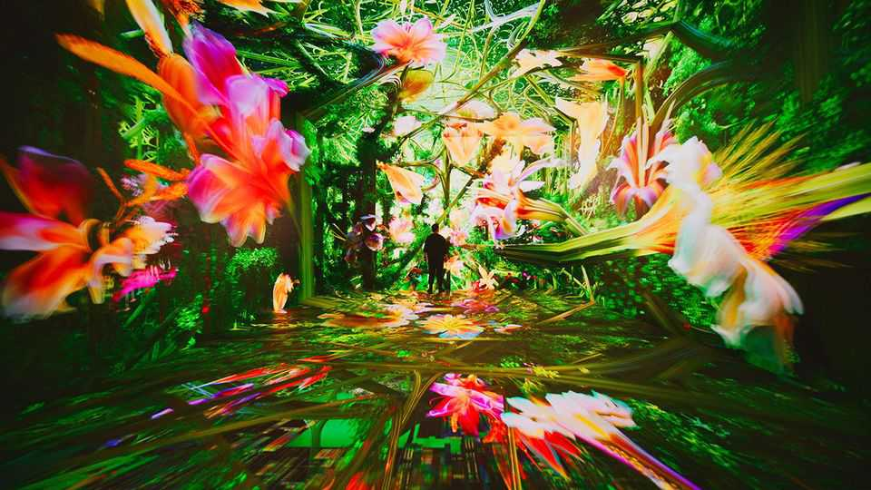
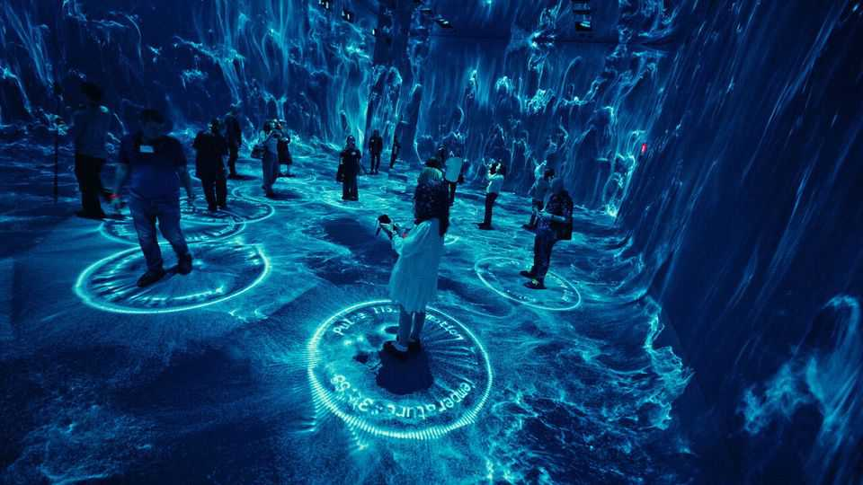
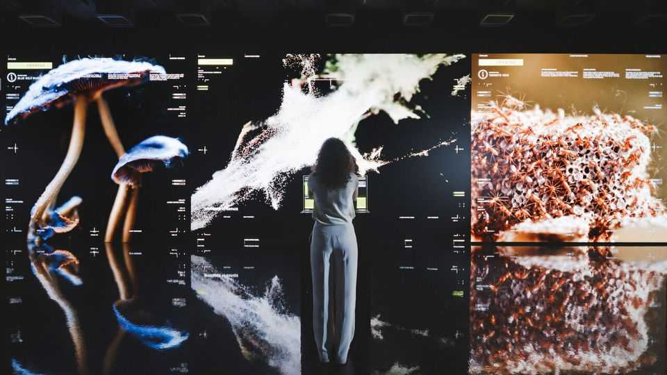

Are you having fun yet? Dataland, an intense new AI art museum
Refik Anadol’s new project takes your senses by storm
June 25th 2026

VISITORS TO Dataland, a new museum for AI arts in Los Angeles, step onto an escalator and descend into a tempest. Rain blows sideways across mirrored walls. Next, psychedelic pink amoebas and green squiggly lines gyrate across the walls and floor. It is hard to walk straight. Is this what it is like to be trapped inside a lava lamp? Soon guests are enveloped in the sounds of the rainforest, and fireflies flit across the screens. “It’s a living sculpture,” says Refik Anadol, a digital artist and the museum’s co-creator. He points to lines emanating from people’s feet. “That’s your data.”
Dataland is the creation of Mr Anadol and his wife, Efsun Erkilic, two Turkish artists. Mr Anadol is probably the most prominent and polarising AI artist working today—regarded by some as avant-garde and by others as spectacle-heavy and too commercial. (His works have appeared in the Museum of Modern Art in New York and the Sphere, a concert venue in Las Vegas.)

Dataland opened in a downtown development that Frank Gehry, its architect, always hoped would become part of an arts district. Mr Anadol’s ambition is for the new museum to convince visitors that there is more to AI art than hype. He starts with the premise that there is ethical and unethical data. The former is about “asking permission” and “getting licences” for art works’ data inputs, not training models on data irrespective of consent. “If a human and machine collaborate, it’s a new form of art,” says Mr Anadol.
Dataland’s more radical premise is the idea that its AI creations might help visitors get in touch with their humanity. This is done, in large part, by assaulting the senses. When guests arrive, they are given medical-grade devices—a watch and a heavy collar—that record heart rate, body temperature and emotional responses. As visitors move around, their measurements and location are fed into a system that changes the art to react to each person. Your correspondent’s collar occasionally emits a fresh scent evoking summer rain and laundry detergent.

The question of how to use tech to enhance visitors’ experiences is one with which every museum is grappling. Many are opting for interactive experiences in the virtual-reality vein. Some are designing whole exhibitions around screens, which can leave you feeling both over-stimulated and isolated. Are the days of asking the person next to you what they think of a painting over? What about being sure that you are seeing the same thing?
At Dataland, the experience is transfixing and overwhelming. It fails in its more grandiose ambitions—though it does inadvertently make you appreciate nature. By the end of the visit many guests will find themselves desperate for sunshine. After being immersed in a kaleidoscopic digital forest, they will crave the silence and stillness of a real one. ■
For more on the latest books, films, TV shows, albums and controversies, sign up to Plot Twist, our weekly subscriber-only newsletter